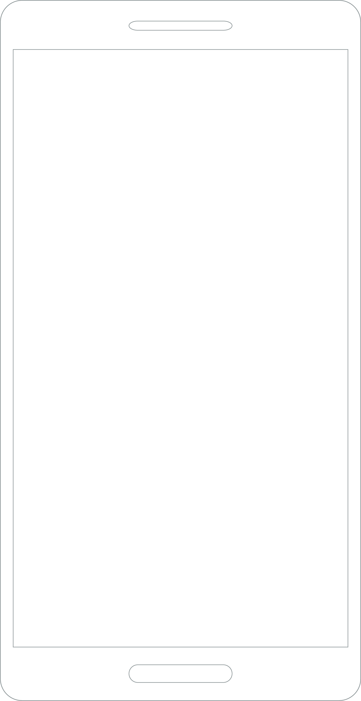
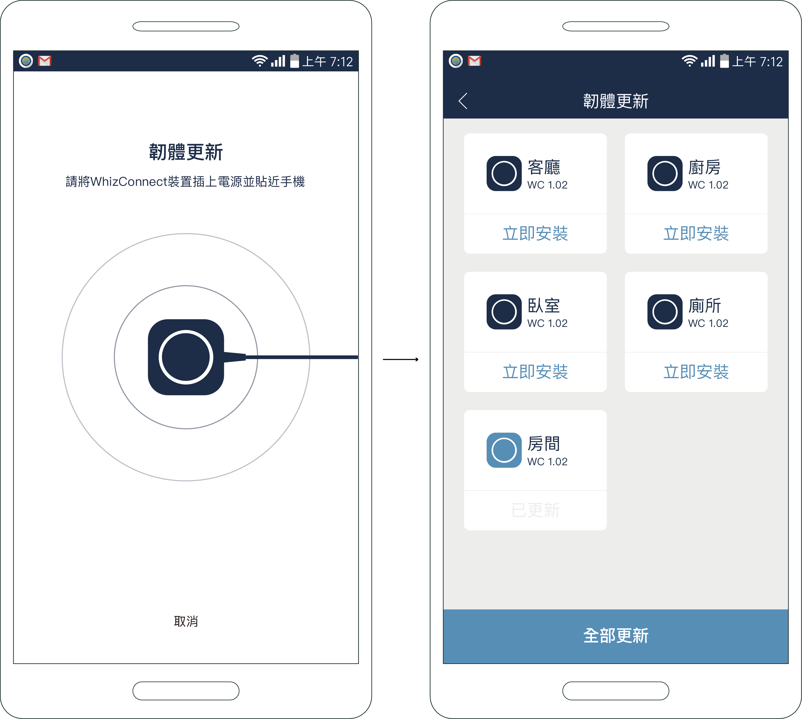

天才呼叫鈴
扁平化設計 (Flat Design)
去除浮雕、陰影、漸層等3D立體感，完全以平面來呈現視覺元素

照護者打開App即可了解居家長者一天的生活模式，
遠端查看資料並即時關心
目標使用者：照護者、子女
主頁面
呈現三種資料
進入歷史介面
管理列表
點選
管理列表 - 通知設定
可依據個人身體狀況調整數值範圍

管理列表 - 韌體更新
平時如要更新也會傳送推播通知提醒使用者
歷史介面 - 區域定位
查看使用者（居家長者）一天的歷史資料，也可利用月曆查詢其他天的生活型態。
歷史介面 - 生理資訊
條列式血壓與血糖的歷史資料，兩項資訊皆可經由社群網路分享給其他家人或是 下載歷史紀錄提供給專業人士查看。
歷史介面 - 環境監測
溫濕度歷史資料以圖表方式呈現，可選擇一天或一週查看環境數據。

燈飾設計
利用 Grasshopper 繪製模型，再進入雷射切割，最後模型組裝
使用工具
Rhinoceros、Lasercut
目的
利用App
藍牙連接 控制車子的前進左右
前進時 前燈出現白色提示燈
後退時 後燈閃爍紅色警示燈
使用工具
藍牙模組、L9110S、DCmotor
版權所有 © 2020 LIN EN-JU. All Rights Reserved.